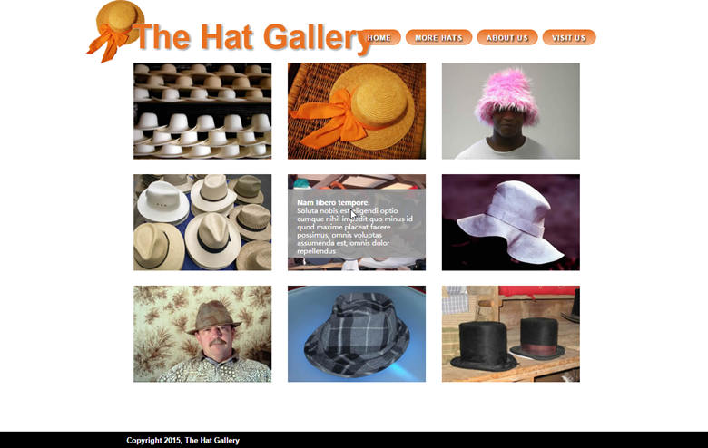
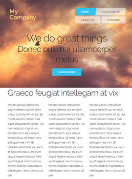

HTML5&CSS 学习与练习
参考书
CSS 实战手册(第四版)

使用 CSS 能创建专业的网站，不过即使是有经验的 Web 设计师，也很难学会 CSS 的各种细节。第四版在前几版的基础上做了全面升级，提供了最新、最有用的提示和技巧，而且通过教程说明现今可用的 CSS。会教你如何使用新工具（如弹性盒和 Sass）构建外观精美的网页，而且在任何桌面设备或移动设备中都能快速运行。适合业余和有经验的设计师等阅读。
从基础知识入手 编写对 CSS 友好的 HTML 代码，包括现今的浏览器能识别的 HTML5 标签。
为移动设备设计 创建对移动设备友好的网页，以便访客随时随地浏览。
创建充满活力的网页 添加能吸引眼球的动画，创建用户体验好的表单。
控制页面的布局 使用专业的设计技术，例如浮动和定位。
让布局更灵活 使用弹性盒设计网站，适应不同的设备和屏幕宽度。
更有效地工作 使用 Sass，减少编写的 CSS 代码量，以小型文件组织样式。
第2章 编写样式和样式表
第3章 选择符

第7章 外边距、内边距和边框

第8章 把图形添加到网页中
第9章 装饰网站的导航
第10章 CSS变形，过渡和动画
第11章 装饰表格和表单
第13章 构建基于浮动的布局
第14章 定位网页中的元素

第15章 响应式Web设计
第16章 使用CSS栅格系统

第17章 Web布局新方法：弹性盒